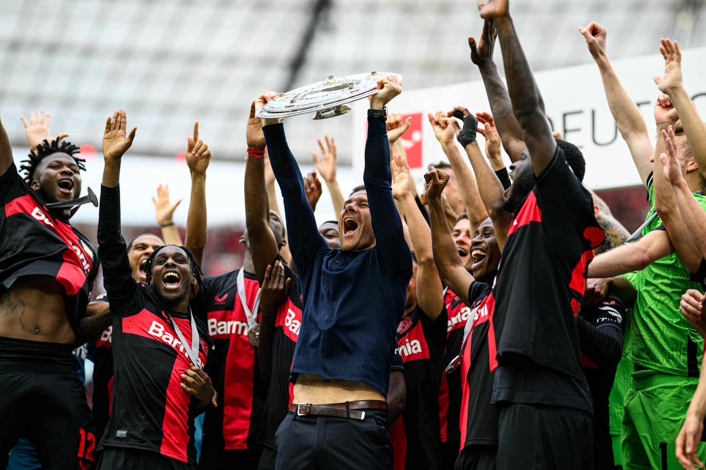

EL MOMENTO DEL CAMPEÓN: EL WERKSELF RECIBE LA ENSALADERA
Sábado, 18 de Mayo de 2024: ¡El Bayer Leverkusen recibe la Ensaladera de Campeón!' el capitán Lukas Hradecky y el entrenador Xabi Alonso alzan al cielo el trofeo. Éxtasis absoluto para el Werself, los aficionados del Bayer Leverkusen y todos los que pudieron vivir este momento histórico.

Revive el momento en el que el Bayer Leverkusen levanta el Trofeo de CAMPEÓN INVICTO de la BUNDESLIGA